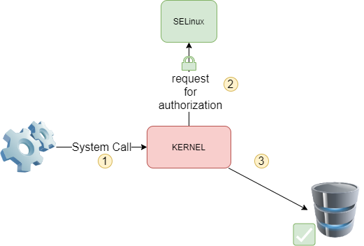
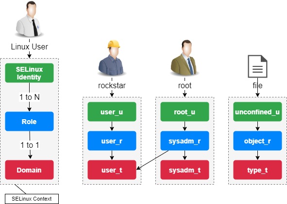
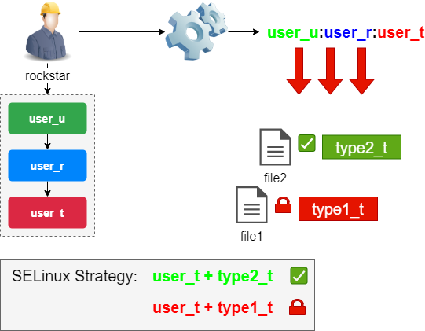
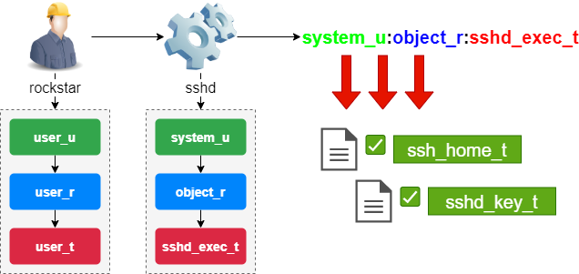

SELinux security¶
With the arrival of kernel version 2.6, a new security system was introduced to provide a security mechanism to support access control security policies.
This system is called SELinux (Security Enhanced Linux) and was created by the NSA (National Security Administration) to implement a robust Mandatory Access Control (MAC) architecture in the Linux kernel subsystems.
If, throughout your career, you have either disabled or ignored SELinux, this document will be a good introduction to this system. SELinux works to limit privileges or remove the risks associated with compromising a program or daemon.
Before starting, you should know that SELinux is mainly intended for RHEL distributions, although it is possible to implement it on other distributions like Debian (but good luck!). The distributions of the Debian family generally integrate the AppArmor system, which works differently from SELinux.
Generalities¶
SELinux (Security Enhanced Linux) is a Mandatory Access Control system.
Before the appearance of MAC systems, standard access management security was based on DAC (Discretionary Access Control) systems. An application, or a daemon, operated with UID or SUID (Set Owner User Id) rights, which made it possible to evaluate permissions (on files, sockets, and other processes...) according to this user. This operation does not sufficiently limit the rights of a program that is corrupted, potentially allowing it to access the subsystems of the operating system.
A MAC system reinforces the separation of confidentiality and integrity information in the system to achieve a containment system. The containment system is independent of the traditional rights system and there is no notion of a superuser.
With each system call, the kernel queries SELinux to see if it allows the action to be performed.

SELinux uses a set of rules (policies) for this. A set of two standard rule sets (targeted and strict) is provided and each application usually provides its own rules.
The SELinux context¶
The operation of SELinux is totally different from traditional Unix rights.
The SELinux security context is defined by the trio identity+role+domain.
The identity of a user depends directly on his Linux account. An identity is assigned one or more roles, but to each role corresponds to one domain, and only one.
It is according to the domain of the security context (and thus the role) that the rights of a user on a resource are evaluated.

The terms "domain" and "type" are similar. Typically "domain" is used when referring to a process, while "type" refers to an object.
The naming convention is: user_u:role_r:type_t.
The security context is assigned to a user at the time of his connection, according to his roles. The security context of a file is defined by the chcon (change context) command, which we will see later in this document.
Consider the following pieces of the SELinux puzzle:
- The subjects
- The objects
- The policies
- The mode
When a subject (an application for example) tries to access an object (a file for example), the SELinux part of the Linux kernel queries its policy database. Depending on the mode of operation, SELinux authorizes access to the object in case of success, otherwise it records the failure in the file /var/log/messages.
The SELinux context of standard processes¶
The rights of a process depend on its security context.
By default, the security context of the process is defined by the context of the user (identity + role + domain) who launches it.
A domain being a specific type (in the SELinux sense) linked to a process and inherited (normally) from the user who launched it, its rights are expressed in terms of authorization or refusal on types linked to objects:
A process whose context has security domain D can access objects of type T.

The SELinux context of important processes¶
Most important programs are assigned a dedicated domain.
Each executable is tagged with a dedicated type (here sshd_exec_t) which automatically switches the associated process to the sshd_t context (instead of user_t).
This mechanism is essential since it restricts the rights of a process as much as possible.

Management¶
The semanage command is used to manage SELinux rules.
semanage [object_type] [options]
Example:
$ semanage boolean -l
| Options | Observations |
|---|---|
| -a | Adds an object |
| -d | Delete an object |
| -m | Modify an object |
| -l | List the objects |
The semanage command may not be installed by default under Rocky Linux.
Without knowing the package that provides this command, you should search for its name with the command:
dnf provides */semanage
then install it:
sudo dnf install policycoreutils-python-utils
Administering Boolean objects¶
Booleans allow the containment of processes.
semanage boolean [options]
To list the available Booleans:
semanage boolean –l
SELinux boolean State Default Description
…
httpd_can_sendmail (off , off) Allow httpd to send mail
…
Note
As you can see, there is a default state (eg. at startup) and a running state.
The setsebool command is used to change the state of a boolean object:
setsebool [-PV] boolean on|off
Example:
sudo setsebool -P httpd_can_sendmail on
| Options | Observations |
|---|---|
-P |
Changes the default value at startup (otherwise only until reboot) |
-V |
Deletes an object |
Warning
Don't forget the -P option to keep the state after the next startup.
Administering Port objects¶
The semanage command is used to manage objects of type port:
semanage port [options]
Example: allow port 81 for httpd domain processes
sudo semanage port -a -t http_port_t -p tcp 81
Operating modes¶
SELinux has three operating modes:
- Enforcing
Default mode for Rocky Linux. Access will be restricted according to the rules in force.
- Permissive
Rules are polled, access errors are logged, but access will not be blocked.
- Disabled
Nothing will be restricted, nothing will be logged.
By default, most operating systems are configured with SELinux in Enforcing mode.
The getenforce command returns the current operating mode
getenforce
Example:
$ getenforce
Enforcing
The sestatus command returns information about SELinux
sestatus
Example:
$ sestatus
SELinux status: enabled
SELinuxfs mount: /sys/fs/selinux
SELinux root directory: /etc/selinux
Loaded policy name: targeted
Current mode: enforcing
Mode from config file: enforcing
...
Max kernel policy version: 33
The setenforce command changes the current operating mode:
setenforce 0|1
Switch SELinux to permissive mode:
sudo setenforce 0
The /etc/sysconfig/selinux file¶
The /etc/sysconfig/selinux file allows you to change the operating mode of SELinux.
Warning
Disabling SELinux is done at your own risk! It is better to learn how SELinux works than to disable it systematically!
Edit the file /etc/sysconfig/selinux
SELINUX=disabled
Note
/etc/sysconfig/selinux is a symlink to /etc/selinux/config
Reboot the system:
sudo reboot
Warning
Beware of the SELinux mode change!
In permissive or disabled mode, newly created files will not have any labels.
To reactivate SELinux, you will have to reposition the labels on your entire system.
Labeling the entire system:
sudo touch /.autorelabel
sudo reboot
The Policy Type¶
SELinux provides two standard types of rules:
- Targeted: only network daemons are protected (
dhcpd,httpd,named,nscd,ntpd,portmap,snmpd,squidandsyslogd) - Strict: all daemons are protected
Context¶
The display of security contexts is done with the -Z option. It is associated with many commands:
Examples:
id -Z # the user's context
ls -Z # those of the current files
ps -eZ # those of the processes
netstat –Z # for network connections
lsof -Z # for open files
The matchpathcon command returns the context of a directory.
matchpathcon directory
Example:
sudo matchpathcon /root
/root system_u:object_r:admin_home_t:s0
sudo matchpathcon /
/ system_u:object_r:root_t:s0
The chcon command modifies a security context:
chcon [-vR] [-u USER] [–r ROLE] [-t TYPE] file
Example:
sudo chcon -vR -t httpd_sys_content_t /data/websites/
| Options | Observations |
|---|---|
-v |
Switch into verbose mode |
-R |
Apply recursion |
-u,-r,-t |
Applies to a user, role or type |
The restorecon command restores the default security context (the one provided by the rules):
restorecon [-vR] directory
Example:
sudo restorecon -vR /home/
| Options | Observations |
|---|---|
-v |
Switch into verbose mode |
-R |
Apply recursion |
To make a context change survive to a restorecon, you have to modify the default file contexts with the semanage fcontext command:
semanage fcontext -a options file
Note
If you are performing a context switch for a folder that is not standard for the system, creating the rule and then applying the context is a good practice as in the example below!
Example:
$ sudo semanage fcontext -a -t httpd_sys_content_t "/data/websites(/.*)?"
$ sudo restorecon -vR /data/websites/
audit2why command¶
The audit2why command indicates the cause of a SELinux rejection:
audit2why [-vw]
Example to get the cause of the last rejection by SELinux:
sudo cat /var/log/audit/audit.log | grep AVC | grep denied | tail -1 | audit2why
| Options | Observations |
|---|---|
-v |
Switch into verbose mode |
-w |
Translates the cause of a rejection by SELinux and proposes a solution to remedy it (default option) |
Going further with SELinux¶
The audit2allow command creates a module to allow a SELinux action (when no module exists) from a line in an "audit" file:
audit2allow [-mM]
Example:
sudo cat /var/log/audit/audit.log | grep AVC | grep denied | tail -1 | audit2allow -M mylocalmodule
| Options | Observations |
|---|---|
-m |
Just create the module (*.te) |
-M |
Create the module, compile and package it (*.pp) |
Example of configuration¶
After the execution of a command, the system gives you back the command prompt but the expected result is not visible: no error message on the screen.
- Step 1: Read the log file knowing that the message we are interested in is of type AVC (SELinux), refused (denied) and the most recent one (therefore the last one).
sudo cat /var/log/audit/audit.log | grep AVC | grep denied | tail -1
The message is correctly isolated but is of no help to us.
- Step 2: Read the isolated message with the
audit2whycommand to get a more explicit message that may contain the solution to our problem (typically a boolean to be set).
sudo cat /var/log/audit/audit.log | grep AVC | grep denied | tail -1 | audit2why
There are two cases: either we can place a context or fill in a boolean, or we must go to step 3 to create our own context.
- Step 3: Create your own module.
$ sudo cat /var/log/audit/audit.log | grep AVC | grep denied | tail -1 | audit2allow -M mylocalmodule
Generating type enforcement: mylocalmodule.te
Compiling policy: checkmodule -M -m -o mylocalmodule.mod mylocalmodule.te
Building package: semodule_package -o mylocalmodule.pp -m mylocalmodule.mod
$ sudo semodule -i mylocalmodule.pp